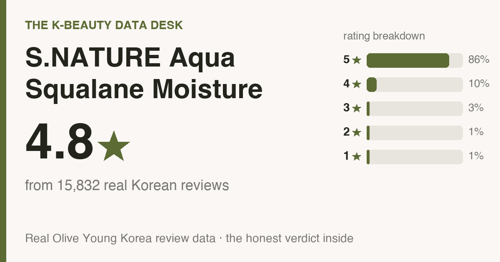

Updated July 2026. The numbers below come from 15,832 genuine Olive Young reviews, 500 of which I read one by one. Every reviewer is a real buyer. I didn't write, purchase, or translate a single word any of them said.
One disclosure before we go: the store links at the bottom pay me a small cut if you buy through them. Your price doesn't move, and neither does my verdict.

The short version: It averages 4.8★ (86% gave it five stars) across 15,832 Olive Young reviews, and buyers rate it highest for hydration (76%), soothing redness (22%). It's a combination and dry skin favorite (full who-should-skip rundown below).
Korean price is roughly ₩22,330 (≈ $16). US pricing bounces around, so the buy links will tell you today's number better than I can.
Now the awkward stat: only 9% of reviewers said they bought it again. Most people enjoyed the jar they had and then quietly moved on. That's a curiosity purchase, not a shelf staple. If money is the deciding factor, a plain hydrating cream covers the same ground for less.
Some context. S.NATURE Aqua Squalane Moisture Cream sells hard on Olive Young, the retailer basically every Korean shopper defaults to, and yet searching for it in English gets you almost nothing. A TikTok with no substance, maybe. So I went into the review pile and pulled out the parts a friend would actually tell you before you spent money.
The average sits at 4.8 stars, and it isn't a small pack of superfans propping it up. 86% of reviewers gave it the full five stars (that's almost 4 in 5), and 96% landed at four or five.
Sorted by sentiment, 91% come out positive. On a pool this size, that's a strong number, and it usually means consistent results rather than one viral spike.
Read a hundred of these in a row and the same words surface constantly. Instant hydration, over and over.
So what is it demonstrably good at? The counts:
Star ratings are the headline; the buy-or-skip decision lives in the details. So I went through the 500 most-helpful reviews and tallied what people kept circling back to. A note on the math before you read the numbers: everything in this section comes from those 500, while the star ratings and skin-type splits above come from the full base. What stood out:
Inside the 5-star pile, three phrases repeat endlessly: hydration & dewiness, fast absorption / fresh finish, and no sticky or heavy feel.
For reactive skin this section outranks the star rating by a mile. Among everyone who brought it up, 76% said it felt gentle with zero sting, and just 1% reported any irritation at all. As far as crowd data goes, that's about as clean as it gets. Your skin still gets the final vote, though, so patch-test on your jaw for a couple of days before committing.
The reviewer pool skews combination (53%), dry (38%), oily (9%), which means those are the skins these reviews are really describing (it leans combination and dry skin). If you're in that group, this crowd is speaking your language. If you're not, the product might still work for you. It just means fewer reviewers share your skin, so discount what you read accordingly.
Genuinely worth it for you if:
Who I'd gently steer away (or at least tell to go in eyes-open):
Nothing suits everyone. If one of these is your real goal, here's the category that deserves your money, with rough US prices so you know the budget going in:
The names above are well-known starting points to research, not ranked picks. Go vet them yourself and match on what reviewers say each does best, then on price.
My source is the review pile, not a lab sheet, so I can't call this fragrance not verified (I read reviews, not the INCI). The 30-second check that actually settles it: open the buy page, Ctrl/Cmd-F the ingredient list for "fragrance / parfum" and "alcohol denat." If either shows up and your skin hates it, skip. Reviewers called it gentle, but on reactive skin the label answers the question, not a star rating.
Order of operations is where people go wrong, so, briefly, for this format:
It's a strong match. 53% of reviewers had combination skin, the single biggest group, so if that's you, the odds are in your favor.
Mostly yes. 76% of reviewers said it felt gentle with no sting. Still patch-test if you react easily, but the irritation rate is genuinely low.
Reviewers describe it as fast-absorbing and fresh rather than greasy, so the glow reads more like dewy hydration than a heavy sheen. One honest gap: this is a Korean review base, so it can't tell you how that finish reads on deeper skin tones specifically, and I won't invent a verdict the reviews don't contain. What I'd do instead: press a thin layer onto one cheek, then check it in daylight AND in a flash selfie before you commit. Any dewy formula can flare shiny under a flash on any tone, so the only honest answer is watching how it behaves on your face.
Honestly, probably not. Normal skin will like it but won't need it, and if the cream you own already works for you, this won't change your life. It's a genuinely nice one if you're starting fresh or replacing something you don't love, but “I already have one that works” is a perfectly good reason to skip.
Buzz proves nothing. Repeat purchases prove something. 9% said they repurchased and 41% reviewed after a month or more, and reviewers most often rate it best for hydration (76%). The re-buy rate is modest, so the honest read is: it delivers on that one job, it just doesn't inspire frantic restocking.
It's one of the better-reviewed picks in its category, though repeat-buys are modest, so treat it as a try-it, not a staple. Worth it if its top reviewer-voted strengths line up with what your skin actually needs, and you're not buying it for the hyped actives.
I read the reviews, not the ingredient list, so I can't confirm fragrance status. If you're fragrance-sensitive, patch-test on your jaw for 24–48h first.
I don't track other brands' prices, so I won't invent a dupe for you. Compare it against other top-ranked picks in the same category and match on what reviewers say it does best, not just on price.
Amazon is the easiest (it auto-routes to your local store), and Olive Young runs its own US store (us.oliveyoung.com) now too. YesStyle and Stylevana are solid value alternates. Outside the US, Olive Young Global ships to the UK, Canada, Australia, Singapore and more. Links are below.
For combination and dry skin chasing hydration and calmer redness, S.NATURE Aqua Squalane Moisture Cream is an easy yes. It sets out to do one thing and people are visibly happy with how it does it. If that's your lane and you don't already have a cream you love, buy it without much agonizing.
And the enthusiasm isn't a honeymoon phase. 41% of the reviews I read came after a month or more of use, so nobody's cooling on it by week two.
Not your match? Here are other reviews I built the same way, all the numbers and who-should-skip included:
Disclosure: This article contains affiliate links. If you buy through them, I may earn a small commission at no extra cost to you.
US: Amazon (easiest) or Olive Young's own US store. UK · Canada · Australia · Singapore · NZ: Olive Young Global ships to you.
← All K-Beauty Data Desk reviews · Best-seller rankings · About & methodology
Published by The K-Beauty Data Desk · Data refreshed 2026-07-11. The reviews are 100% real Olive Young buyers. My job was reading them and making sense of them for you. I never wrote, bought, paid for, or translated any individual review, and this jar never touched my own face. I got no free product and I'm not paid or approved by the brand. Check the source ratings yourself.
Data basis: aggregate statistics from Olive Young Korea, retrieved 2026-07-11. The ratings, review count, star distribution and satisfaction polls are all facts pulled in aggregate. The wording, decoding and recommendations are mine. I never copy or translate individual user reviews.